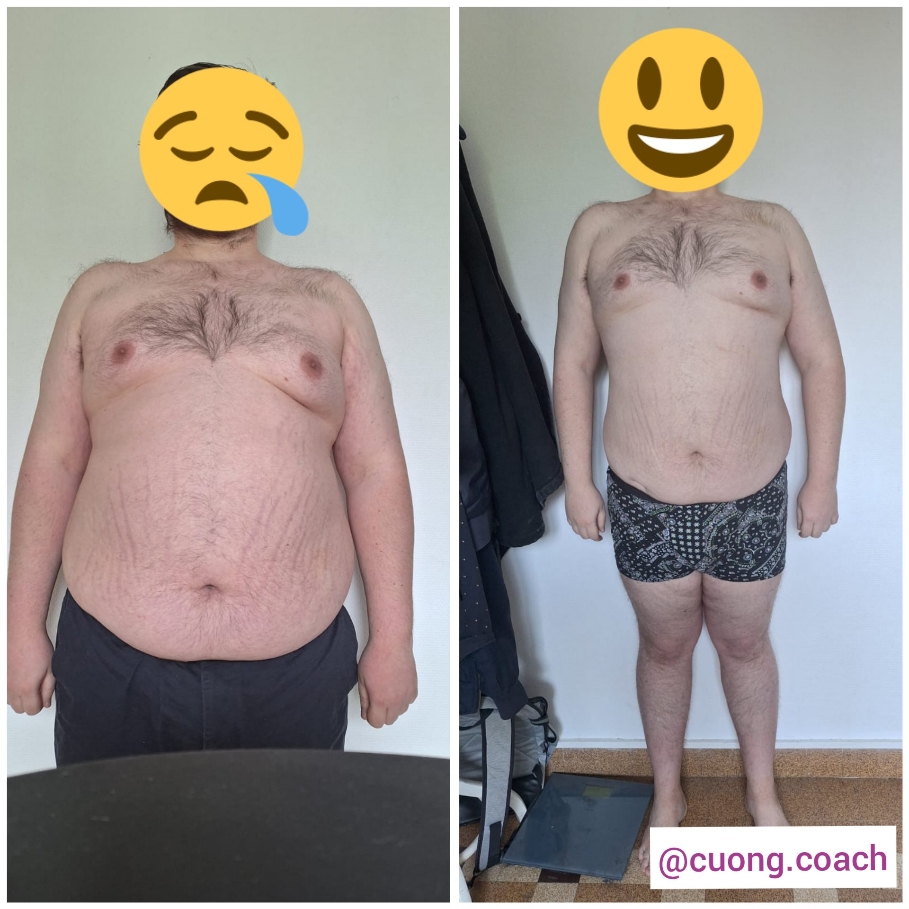
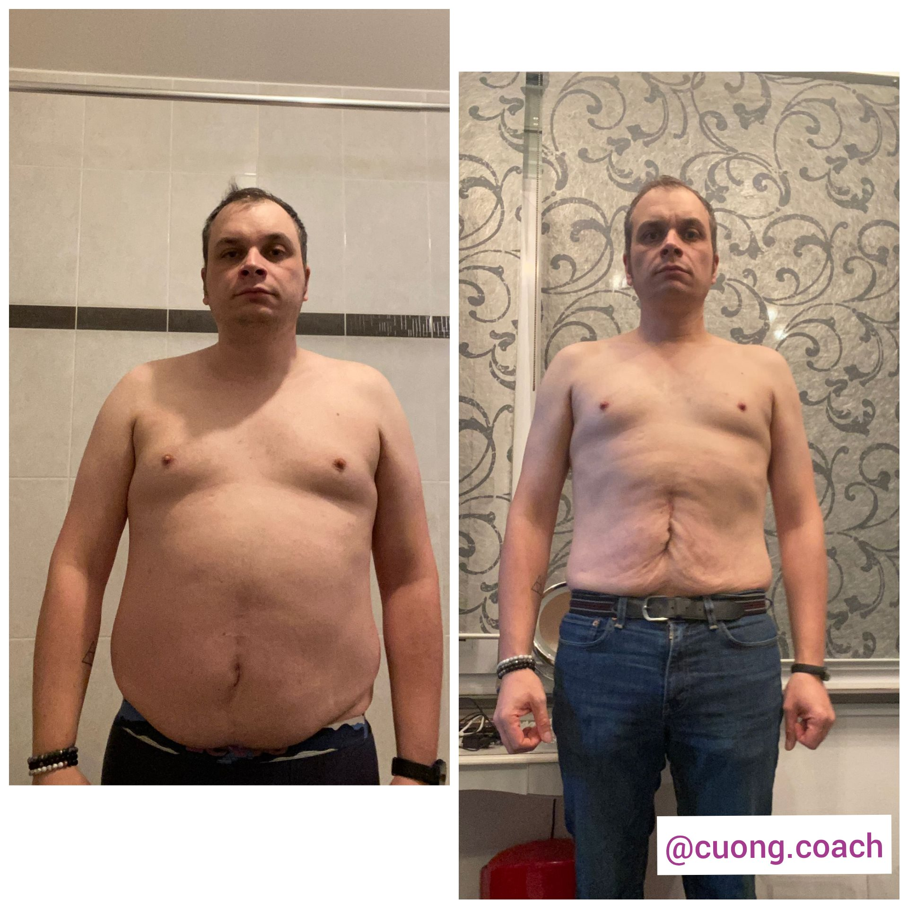
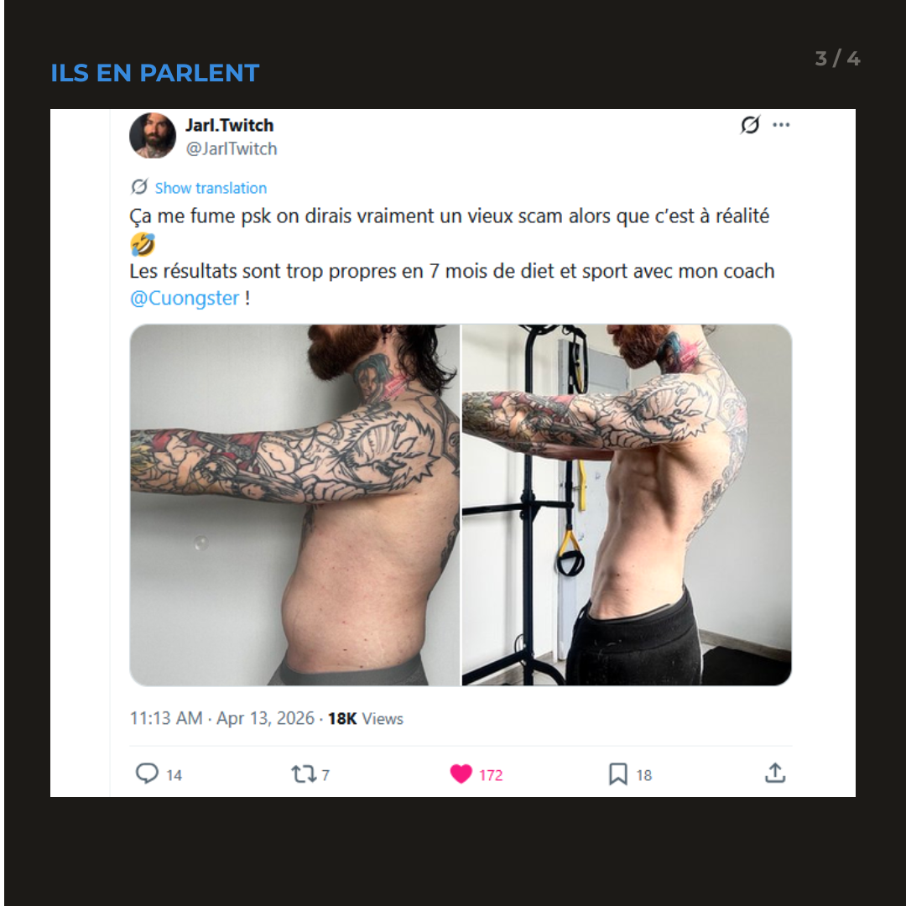

Le H-Score™ mesure où en est réellement votre capital santé — énergie, poids, sommeil, résilience au stress — et ce que vous pouvez récupérer en 3 mois, avec moins de 2h de sport par semaine. Sans régime. Sans salle obligatoire.
Calculer mon H-Score™ 10 questions · Résultat immédiat · 100% confidentielCe ne sont pas les connaissances qui vous manquent. C'est un système compatible avec 60 heures de travail par semaine.
Coup de barre après le déjeuner, café pour tenir, décisions moins nettes en fin de journée. Votre lucidité est votre outil de travail — et elle s'érode.
5, 10, 15 kg pris en quelques années de déjeuners d'affaires et de soirées écourtées. Vous le voyez. Votre entourage aussi.
L'abonnement salle jamais utilisé, le régime tenu 3 semaines, l'appli supprimée. Le problème n'est pas votre discipline — vous en avez à revendre. C'est la méthode.
Je m'appelle Cuong Cao. Je dirige mon entreprise depuis plusieurs années — les semaines chargées, les arbitrages permanents, la charge mentale qui ne s'éteint jamais : je les vis, comme vous.
C'est précisément pour ça que ma méthode ne ressemble pas aux programmes classiques. Elle est construite pour des gens dont l'agenda est le premier obstacle : moins de 2h de sport par semaine, zéro régime, zéro salle obligatoire — et un accompagnement individuel sur 6 mois pour que les résultats tiennent.
Plus de 300 clients sont passés par ce système. La plupart avaient déjà tout essayé. Ce qui a changé, ce n'est pas leur volonté. C'est d'avoir enfin un plan calibré sur leur vraie vie.
— Cuong Cao, fondateur de Hackmybody
Écrites librement sur LinkedIn par mes clients, sous leur vrai nom et leur vraie fonction. Chacune est vérifiable en un clic.
« Cuong a été mon coach sportif pendant plus de trois ans, notamment pendant la période très particulière du Covid. Non seulement il m'a redonné le goût de la pratique sportive, mais cela m'a permis de retrouver une forme de sérénité en dépit du stress ambiant. Il a été à l'écoute de mes problématiques de santé et a su adapter les sessions tout en gardant un fort niveau d'intensité. Je recommande Cuong à tous ceux qui sont à la recherche d'un coach performant, à tout niveau. »
« Un objectif clair : une sèche efficace malgré un rythme très contraignant — déplacements à l'étranger, repas d'affaires, décalages horaires. Cuong a tout intégré. Résultat : j'ai énormément séché tout en gardant de l'énergie. Rigueur scientifique et flexibilité : je recommande les yeux fermés. »
« J'ai perdu 15 kg grâce à un suivi vraiment personnalisé. Il m'a appris à pratiquer le sport de façon autonome et à manger correctement, malgré un quotidien très sédentaire derrière un écran. Plus qu'un coach, c'est un véritable professeur. »
« 8 ans déjà avec Cuong, en présentiel puis en ligne. Je peux témoigner d'un grand sérieux dans son suivi et ses conseils : constance, attention au corps et discipline. Bravo pour ton souci professionnel de si bien "délivrer" ! »
« Un suivi véritablement personnalisé et un encadrement rigoureux m'ont permis d'ancrer de bonnes habitudes, tant sur l'activité physique que sur l'alimentation. Une approche structurée, exigeante et réellement efficace : je recommande vivement. »
« Presque une quinzaine de kilos perdus en six/sept mois, de manière saine, en apprenant à s'alimenter et à prendre soin de soi d'une toute nouvelle manière. Très heureux du résultat et de la façon dont le processus a été mené ! »
« Son approche a été déterminante pour installer des habitudes durables et adaptées à mon quotidien. Un suivi à la fois rigoureux et flexible, parfaitement ajusté à mes contraintes personnelles et au temps dont je disposais. Un accompagnement personnalisé, sérieux et profondément humain. »
Des messages réels, envoyés par de vrais clients pendant leur accompagnement. Rien n'est retouché.
« Le 12 août : 119,5 kg. Le 12 février : 100,8 kg. -18,7 kg en 6 mois ! Merci pour tous tes conseils. Ce fut un vrai plaisir d'apprendre à gérer mon corps et savoir comment il fonctionne. La communication et ton côté humain, c'est super ! 👍 »
« Pesée hebdomadaire : je fais 96,2 kg !!! J'ai jamais été aussi bas depuis 10 ans 🥹 Cette semaine en activité physique j'ai fait : badminton, salsa, muscu, vélo, cardio. »
« Ça me fume parce qu'on dirait vraiment un vieux scam, alors que c'est la réalité 🤣 Les résultats sont trop propres en 7 mois de diet et sport avec mon coach ! »
« Je viens de mettre mon poids à jour… et je commence l'année avec mon objectif de poids atteint ! 🙌✨🔥 »



Captures et photos partagées avec l'accord des clients.
10 questions, 60 secondes. Vous obtenez un diagnostic honnête de votre capital santé actuel — et de votre marge de progression.
10 minutes au téléphone pour analyser votre score, comprendre votre contexte, et voir si — et comment — on peut vous aider.
Si on avance ensemble : 6 mois d'accompagnement individuel, ajusté chaque semaine à votre agenda réel. Pas l'inverse.
Le H-Score™ est gratuit, immédiat et confidentiel.
Calculer mon H-Score™